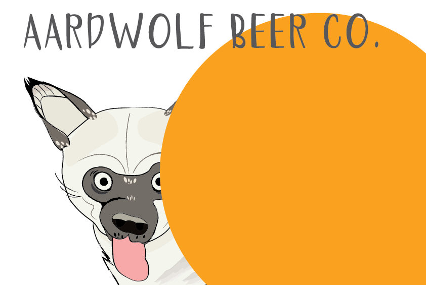
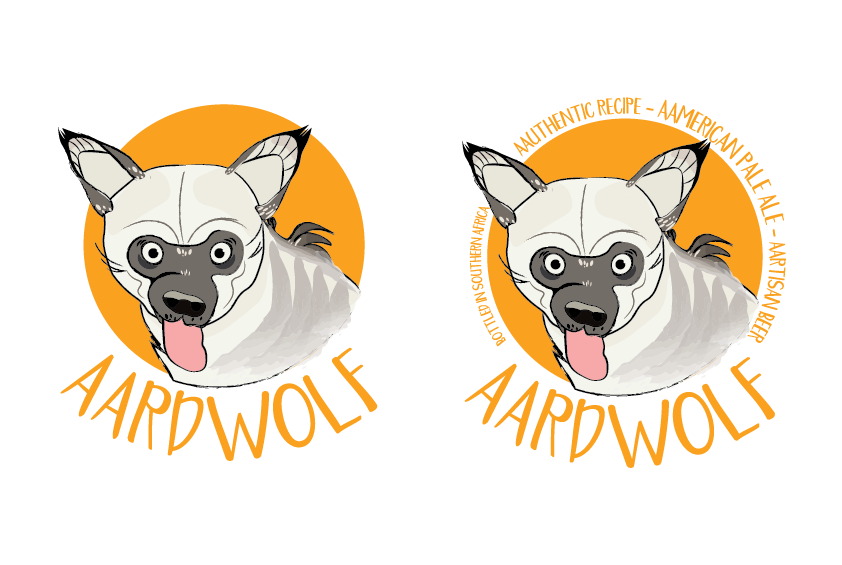
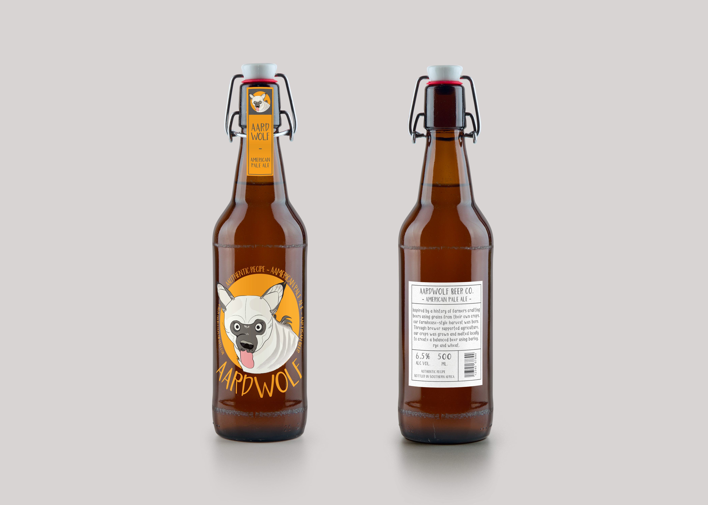

A ilustração do Aardwolf, Lobo-da-terra em português, surgiu de uma contribuição espontânea para um aplicativo de mídias socias de software livre.
O projeto do aplicativo não se desenvolveu e o Lobo-da-terra acabou virando o mascote de uma cerveja American Pale Ale fictícia.
voltar